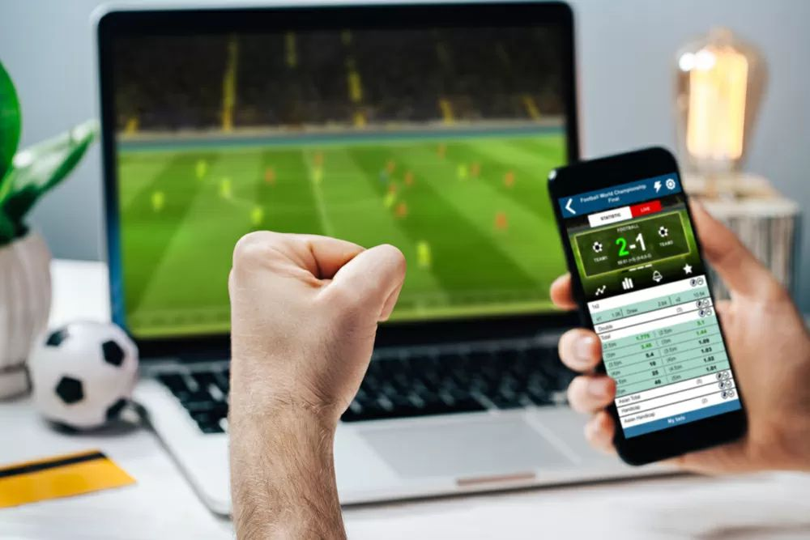

Le scommesse sportive sono dei giochi nei quali si puntano dei soldi su degli eventi sportivi come partite di calcio, corse di cavalli, tennis o basket. Negli ultimi anni, grazie alla diffusione di internet e delle app mobili, questo tipo di scommesse è diventato sempre più accessibile e popolare, soprattutto tra i giovani. Chi scommette può scegliere tra tante opzioni: il risultato finale, il numero di gol, il primo marcatore, se si vince, se si perde, se si pareggia e molto altro. Nonostante questo bisogna ricordare che si tratta comunque di un gioco d'azzardo e, come tale, può creare dipendenza e portare a problemi economici o sociali se non gestito come si dovrebbe e quindi in modo responsabile.
Anche in questo caso, sono molti i minorenni che decidono di giocare senza considerare la regola del gioco vietato ai minori di diciotto anni, magari perché vedono sui social delle pubblicità nelle quali si dice che con queste scommesse ci si guadagna per vivere o comunque ci si possono fare molti soldi, senza sapere però che molte sono truffe; alcuni addirittura pagano dei professionisti chiamati tipster che vendono le loro giocate, anche in questo caso molte perdenti, su canali Telegram o altri social, e questo comporta un maggior dispendio di soldi. Addirittura possiamo trovare gente che questo lo fa come lavoro, come per esempio un tipster chiamato Pengwin, conosciutissimo dai giovani, proprietario del canale Telegram di betting più grande d'Italia; lui, da scommettitore, dice sempre di scommettere entro le proprie possibilità, cosa che molte persone non riescono a fare perché ormai malate di questi giochi e alla fine finiscono per indebitarsi.
| Partita | 1X2 | Over 2.5 | Under 2.5 | Gol | No Gol | Primo Marcatore |
|---|---|---|---|---|---|---|
| Milan vs Juventus | 1: 2.40 – X: 3.10 – 2: 2.80 | 1.85 | 1.90 | 1.75 | 2.00 | Giroud: 5.00 |
| Inter vs Napoli | 1: 2.00 – X: 3.30 – 2: 3.60 | 1.70 | 2.05 | 1.80 | 1.95 | Lautaro: 4.50 |
| Roma vs Lazio | 1: 2.20 – X: 3.20 – 2: 3.10 | 1.95 | 1.80 | 1.85 | 2.00 | Immobile: 5.20 |
Nelle scommesse sportive esistono diverse tipologie di giocate. La più comune è la 1X2, dove si scommette sull'esito finale della partita (vittoria della squadra di casa, pareggio o vittoria della squadra ospite). L'Over/Under 2.5 riguarda il numero totale di gol: "Over 2.5" significa che nella partita si prevedono almeno 3 gol, "Under 2.5" che ci saranno al massimo 2 gol. La scommessa Gol/No Gol indica se entrambe le squadre segneranno almeno un gol o meno. Infine, la giocata sul Primo Marcatore consente di scommettere su chi segnerà il primo gol della partita. Queste opzioni rendono le scommesse più variegate, ma aumentano anche il rischio di perdere, specialmente se non si scommette in modo consapevole.
Oggi esistono numerosi portali dove è possibile effettuare scommesse sportive online in modo legale e regolamentato. Tra i più conosciuti troviamo Planetwin365, Snai, Goldbet e Sisal. Tutti questi operatori offrono piattaforme digitali intuitive per piazzare scommesse su eventi sportivi nazionali e internazionali, con numerose tipologie di giocate disponibili. Tuttavia, è fondamentale ricordare che il gioco è vietato ai minori di 18 anni e può causare dipendenza. Gioca solo su siti autorizzati ADM (Agenzia delle Dogane e dei Monopoli) e in modo responsabile.